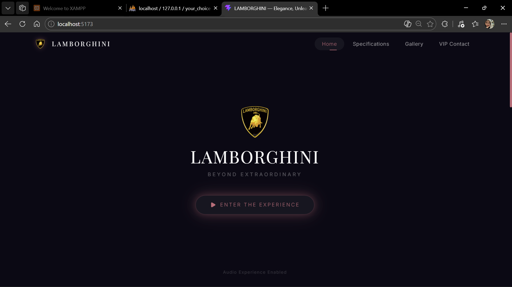
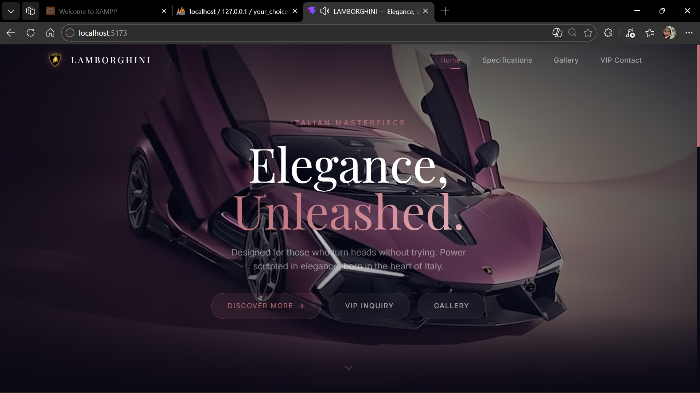
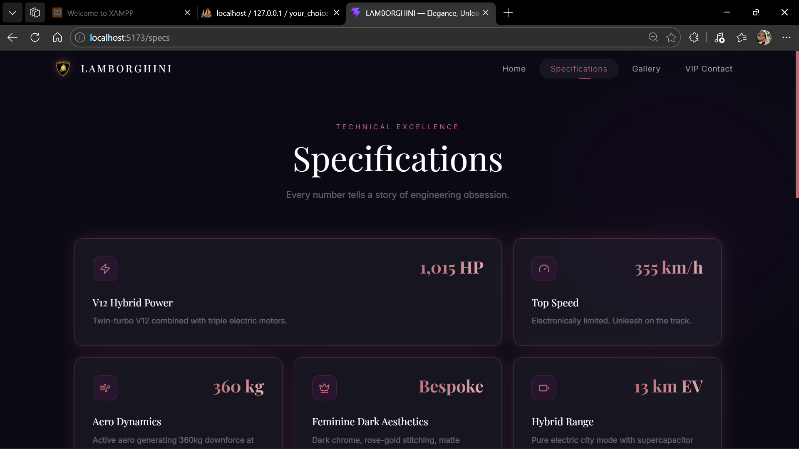
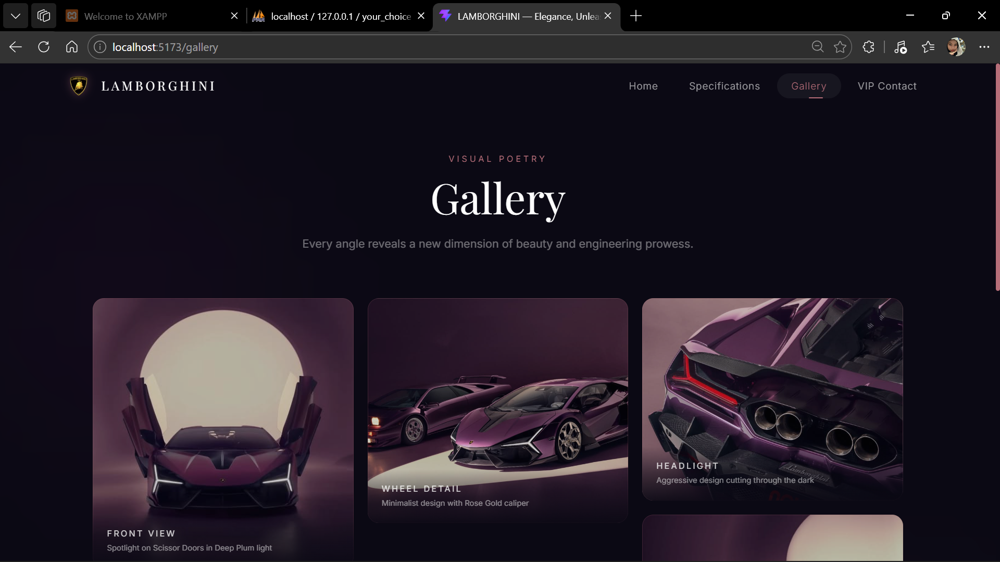
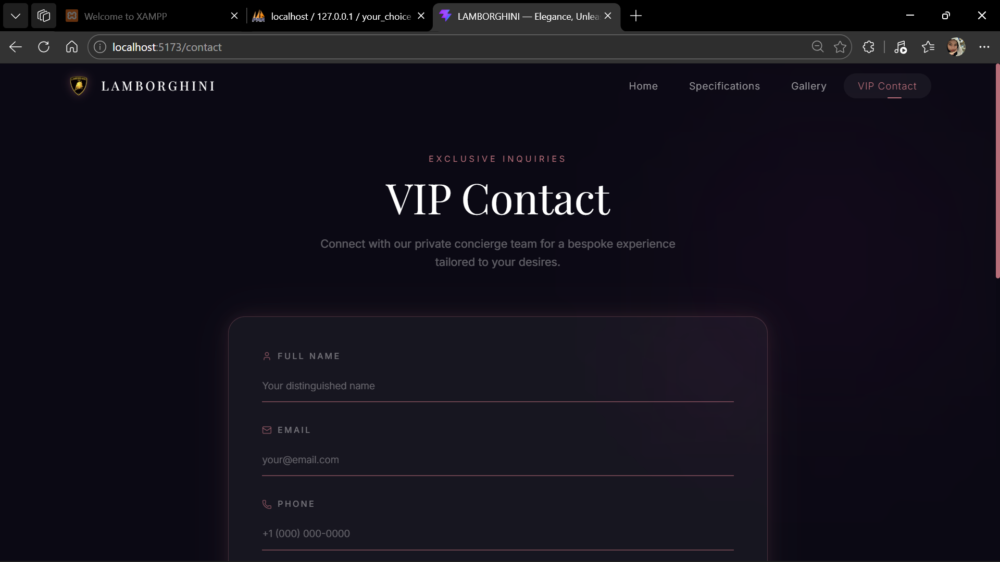
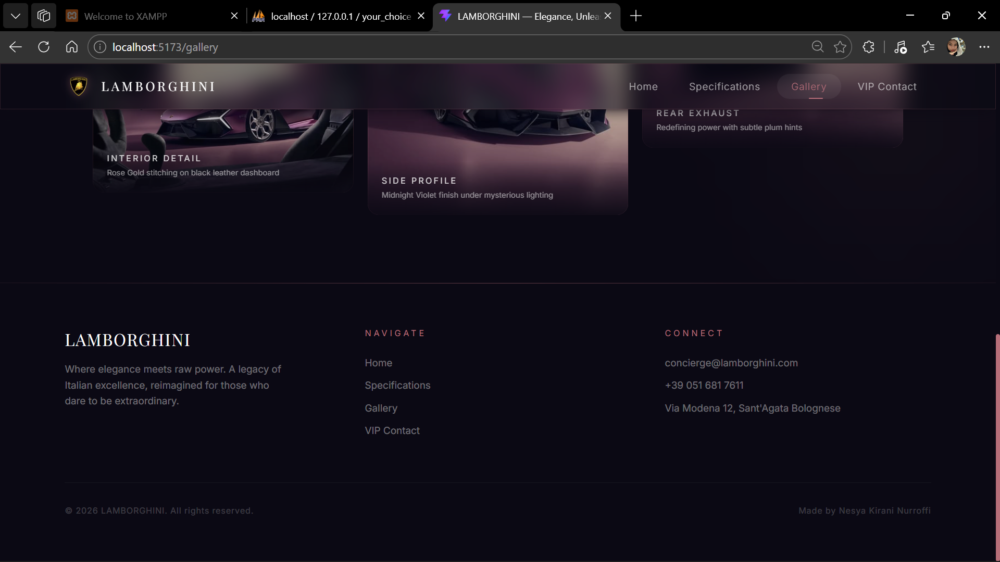

Multi-Page Landing Page Animasi: Lamborghini Vision
github.com/nsyakiraninurroffi/lamborghini-vision-landingProyek "Lamborghini Vision" merupakan sebuah aplikasi web multi-page landing page yang dirancang dengan pendekatan estetika Dark Feminine dan Modern Tech-Core. Aplikasi ini dibangun menggunakan arsitektur Single Page Application (SPA) berbasis komponen React.js, di mana seluruh navigasi antar halaman dikelola secara deklaratif melalui client-side routing tanpa memerlukan full-page reload dari server.
Arsitektur proyek ini memanfaatkan Vite sebagai build tool dan development server yang menawarkan Hot Module Replacement (HMR) dengan kecepatan tinggi. Sistem routing diimplementasikan menggunakan react-router-dom dengan pola BrowserRouter → Routes → Route, sementara transisi antar halaman dibungkus dalam komponen AnimatePresence dari Framer Motion dengan atribut mode="wait" untuk memastikan animasi keluar (exit) selesai sebelum halaman baru dimuat.
Seluruh identitas visual diatur melalui konfigurasi tailwind.config.js dengan tiga warna kustom utama: Midnight Violet (#0B0914) sebagai latar utama, Rose Gold (#B76E79) sebagai aksen premium, dan Deep Plum (#4A154B) sebagai warna pendukung. Tipografi menggunakan font Playfair Display (serif) untuk judul besar dan Inter (sans-serif) untuk teks isi, keduanya dimuat melalui Google Fonts.
Utilitas Glassmorphism dibuat secara kustom di dalam @layer components pada file index.css, meliputi kelas .glass (bg: rgba(255,255,255,0.05), backdrop-filter: blur(12px), border: 1px solid rgba(183,110,121,0.3)), .glass-dark, .glass-input, serta utilitas .glow-rose dan .text-gradient untuk efek cahaya dan gradien teks.
| Direktori / File | Keterangan |
|---|---|
src/components/ | Komponen global: Navbar, Footer, CustomCursor, PageTransition, ScrollToTop |
src/pages/ | Halaman: Home, Specs, Gallery, Contact |
src/index.css | Tailwind directives, utilitas Glassmorphism, animasi keyframe |
src/App.jsx | Root component dengan BrowserRouter dan AnimatePresence |
public/assets/ | Aset statis: video hero, gambar galeri, logo |

Gambar 1 — Tampilan Splash Screen dengan tombol "Enter the Experience"
Komponen Splash Screen berfungsi sebagai Gatekeeper yang mengatasi limitasi kebijakan autoplay audio pada peramban modern (Chrome, Safari). Peramban memblokir pemutaran media dengan suara (unmuted) kecuali pengguna telah berinteraksi terlebih dahulu dengan halaman. Oleh karena itu, layar ini menjadi syarat wajib sebelum video hero diputar dengan suara aktif.
Secara teknis, kontainer splash menggunakan kelas Tailwind fixed inset-0 z-[100] w-full h-screen flex flex-col items-center justify-center bg-midnight-violet overflow-hidden, yang memastikan seluruh viewport tertutupi tanpa kemungkinan pengguna melakukan scroll. Logo resmi Lamborghini dimuat melalui tag <img> dengan path /assets/images/gallery/logo_lamborghini.png dan dibungkus dalam motion.div dengan animasi spring (type: 'spring') yang memberikan efek bounce halus saat muncul.
exit={{ opacity: 0 }} dengan transition={{ duration: 0.8, ease: 'easeInOut' }}animate-pulse-glow — animasi CSS keyframe berdurasi 2.5 detik yang membuat box-shadow Rose Gold berkedip halus secara kontinu.window.scrollTo(0, 0) dipanggil sebelum setSplashVisible(false) agar posisi scroll kembali ke atas.

Gambar 2 — Hero Section dengan video latar belakang dan overlay gradien
Setelah splash screen menghilang, elemen <video> yang telah di-preload (preload="auto") mulai diputar melalui metode imperatif videoRef.current.play() di dalam useEffect yang dipicu oleh perubahan state splashVisible. Video diatur dengan muted = false dan volume = 0.6. Sebagai mekanisme fallback, jika .play() gagal (promise rejected), video akan diputar ulang dalam mode muted agar pengalaman visual tetap terjaga.
Elemen video diposisikan secara absolut (absolute inset-0 w-full h-screen object-cover object-center) di dalam kontainer relatif. Di atasnya, lapisan .hero-overlay memberikan gradien radial (radial-gradient dengan tiga titik henti warna: transparan di pusat, semi-transparan di tengah, dan hampir opaque di tepi) untuk memastikan keterbacaan teks di atasnya.
Konten hero — termasuk teks "Elegance, Unleashed.", sub-headline, dan tiga tombol CTA (Discover More, VIP Inquiry, Gallery) — muncul secara bertahap menggunakan properti delay berjenjang (0.5s, 0.6s, 0.8s, 1.2s, 1.5s) pada masing-masing motion element. Navbar glassmorphism (fixed top-0 z-50) menggunakan useEffect dengan event listener scroll untuk beralih antara latar transparan dan .glass-dark saat scrollY > 50.
useEffect(() => { video.muted = false; video.play().catch(() => { video.muted = true; video.play(); }); }, [splashVisible])CustomCursor.jsx) dengan dua elemen — titik kecil yang mengikuti mouse secara instan, dan lingkaran besar yang mengikuti dengan useSpring({ stiffness: 150, damping: 20 }).

Gambar 3 — Tata letak Bento Grid untuk data spesifikasi teknis
Halaman Spesifikasi mengimplementasikan pola desain Bento Box UI — sebuah tata letak grid asimetris yang terinspirasi dari kotak bento Jepang. Struktur dasarnya menggunakan grid grid-cols-1 md:grid-cols-3 gap-5, di mana masing-masing kartu dapat menempati ruang berbeda melalui kelas Tailwind md:col-span-2 atau md:row-span-2, menciptakan hierarki visual yang dinamis.
Setiap kartu spesifikasi dibungkus dalam motion.div dengan animasi scroll-reveal (whileInView) yang memiliki viewport: { once: true } agar animasi hanya dipicu sekali. Efek hover menggunakan whileHover={{ y: -8, scale: 1.08 }} dengan durasi transisi 0.15 detik untuk respons yang cepat dan tajam. Kelas .glow-rose bertransisi ke .glow-rose-intense saat hover dengan durasi 300ms, memberikan efek cahaya Rose Gold yang semakin intens pada border glassmorphism.
Di bagian bawah halaman, sebuah stat bar menampilkan empat metrik performa (0-100 km/h: 2.8s, 0-200 km/h: 8.6s, Berat: 1.550 kg, Silinder: 12) menggunakan kelas .text-gradient yang mengaplikasikan background: linear-gradient(135deg, #B76E79, #c9828c, #e8b4bc) dengan -webkit-background-clip: text.

Gambar 4 — Masonry grid dengan efek fokus hover pada galeri
Halaman Gallery mengimplementasikan tata letak Masonry Grid menggunakan properti CSS columns-1 sm:columns-2 lg:columns-3 dengan gap-5 space-y-5, yang secara otomatis mengalirkan item ke dalam kolom tanpa memerlukan library tambahan. Setiap item galeri memiliki kelas break-inside-avoid untuk mencegah pemotongan elemen antar kolom.
Fitur interaksi unggulan pada halaman ini adalah trik CSS parent-hover untuk efek fokus. Ketika pengguna mengarahkan kursor ke area grid (.gallery-grid:hover), seluruh item anak akan menerima filter: blur(2px) saturate(0.4) dan opacity: 0.6. Namun, item yang secara spesifik sedang di-hover (.gallery-grid:hover .gallery-item:hover) akan dikembalikan ke filter: blur(0) saturate(1) dan opacity: 1. Teknik ini menciptakan efek fokus sinematik di mana elemen yang dilihat pengguna menjadi sangat menonjol sementara elemen sekitarnya memudar.
Setiap kartu galeri juga memiliki animasi Framer Motion whileHover={{ scale: 1.05 }}, gambar internal yang membesar (group-hover:scale-110 dengan transition-transform duration-700), overlay gelap yang mengintensif (bg-midnight-violet/20 → bg-midnight-violet/70), serta label teks tengah yang muncul dengan efek translate-y-4 → translate-y-0.

Gambar 5 — Formulir kontak VIP dengan desain minimalis
Halaman VIP Contact menampilkan formulir inquiry premium dengan pendekatan desain minimalis. Seluruh input field menggunakan kelas kustom .glass-input yang didefinisikan sebagai: background: transparent; border: none; border-bottom: 2px solid rgba(183,110,121,0.5). Desain ini menghilangkan border luar konvensional dan hanya menampilkan garis bawah Rose Gold, menciptakan kesan bersih dan elegan. Saat fokus, warna border-bottom bertransisi ke #B76E79 solid.
State management formulir menggunakan React Hook useState dengan objek tunggal ({ name, email, phone, message }) dan handler onChange terpusat yang memanfaatkan computed property name ([e.target.name]: e.target.value). Setiap field memiliki ikon dari library Lucide React (User, Mail, Phone, MessageSquare) yang ditempatkan di dalam elemen <label> untuk aksesibilitas. Tombol submit menggunakan kelas .glass .glow-rose dan menampilkan feedback visual berupa teks "✓ Inquiry Sent Successfully" berwarna emerald selama 4 detik setelah pengiriman.
Animasi masuk setiap field menggunakan initial={{ opacity: 0, x: -20 }} dengan delay berjenjang (0.3s, 0.4s, 0.5s, 0.6s) untuk menciptakan efek stagger yang mulus dari kiri ke kanan.

Gambar 6 — Footer dengan informasi navigasi dan personal branding
Komponen Footer didesain sebagai penutup visual yang konsisten di seluruh halaman. Struktur dasarnya menggunakan grid tiga kolom (grid grid-cols-1 md:grid-cols-3 gap-12) yang memuat: (1) identitas brand dengan tagline, (2) tautan navigasi menggunakan komponen NavLink dari React Router, dan (3) informasi kontak. Sebuah garis dekoratif di bagian atas menggunakan bg-gradient-to-r from-transparent via-rose-gold/40 to-transparent untuk memberikan separasi visual yang halus.
Di bagian paling bawah footer, pada sisi kanan, terdapat elemen personal branding pengembang dengan teks "Made by Nesya Kirani Nurroffi". Teks ini menggunakan styling text-white/20 text-xs tracking-wider yang konsisten dengan estetika keseluruhan footer — cukup terlihat sebagai kredit pembuat namun tidak mendominasi hierarki visual.
Proyek Lamborghini Vision mendemonstrasikan penerapan komprehensif dari teknologi frontend modern dalam membangun pengalaman web yang imersif dan premium. Integrasi antara React.js sebagai UI library, Tailwind CSS sebagai utility-first CSS framework, dan Framer Motion sebagai animation engine menghasilkan antarmuka yang tidak hanya estetis, tetapi juga performan dan responsif di berbagai perangkat.
Teknik-teknik lanjutan yang diimplementasikan — seperti Gatekeeper pattern untuk bypass kebijakan autoplay, spring physics animation untuk transisi yang natural, parent-hover CSS trick untuk efek fokus galeri, dan arsitektur komponen modular — menunjukkan pemahaman mendalam terhadap prinsip-prinsip rekayasa perangkat lunak frontend yang profesional.